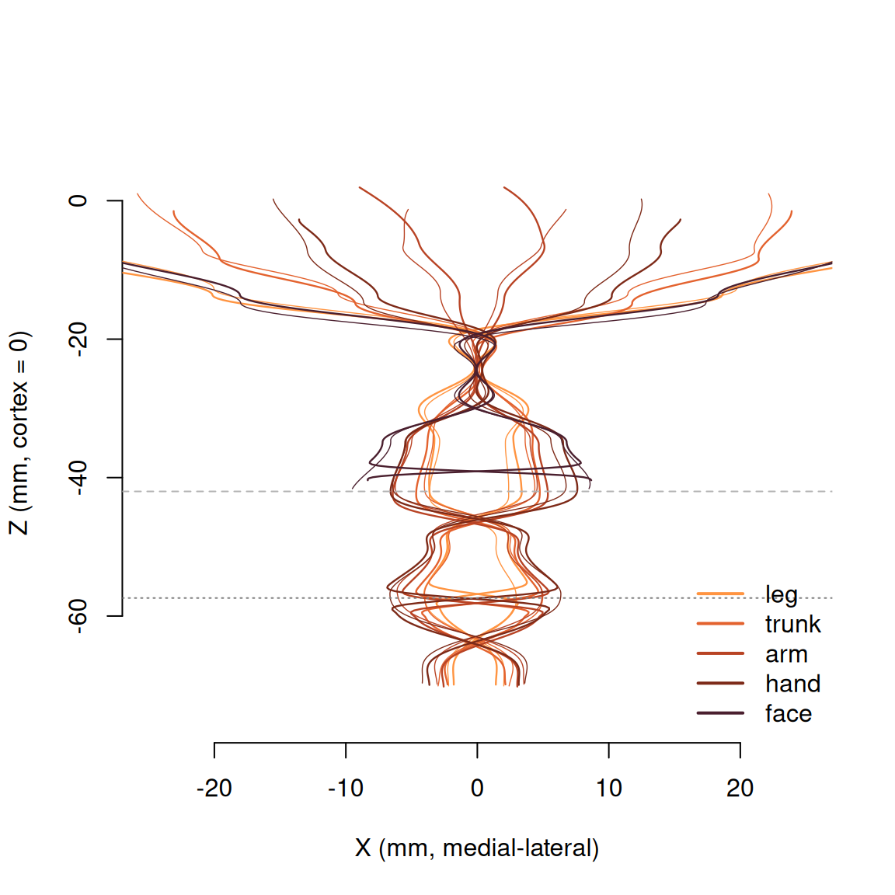

The pyramidal tract: anatomy and mathematical model
2026-11-26
Source:vignettes/pyramidal-tract.qmd
Scope
This document is the reference for the per-bundle pyramidal-tract (PyT) module of master. It first summarises the understood anatomy of the human pyramidal tract — what the module treats as ground truth and the sources it follows — then derives the mathematical model implemented in R/pyramid.R. The code itself is the executable form of the model; this text states the assumptions it encodes and the anatomical conventions it fixes.
Locked decisions. The modelling decisions below are fixed and form the contract the module must satisfy. Each is derived in the section it links to.
-
Somatotopic completeness. One bundle per body-part parcel (
leg,trunk,arm,hand,face); each hemisphere carries the complete contralateral homunculus (Section 3.3). -
Ground-truth mean pathway. The parcel mean pathway
c_k(s)is the deterministic object a tractography algorithm should recover; the FDA perturbation is zero-mean, so the bundle sample mean stays exactly on it (Section 3.4, Section 3.6). -
No split, no fusion. The decussation is a per-streamline sign flip on
q; streamlines never split and branches never fuse (Section 3.5). -
Landing side by the flip alone. From the crus down,
qis single-signed and ascendingleg → face; the flipφ(s)alone decides whether a fibre lands contralateral (crossed) or ipsilateral (uncrossed) (Section 3.3, Section 3.5). -
Corticobulbar face. The
faceparcel stops at the pons, its flip completes exactly at the pons, and it takes no posterior detour — the bilateral termination of the corticobulbar projection (Section 3.5). -
Anatomically scaled spread. Each axon’s displacement from its parcel centreline is rescaled by the local section half-width
γ(s), so bundle width tracks the cross-section (Section 3.6).
Anatomy of the pyramidal tract
Macroscopic course
The pyramidal tract is the principal motor pathway of the human central nervous system: the collection of axons that originate from the primary motor cortex (Brodmann area 4, the precentral gyrus and the anterior bank of the central sulcus), descend through the corona radiata, the posterior limb of the internal capsule, the crus cerebri of the midbrain, the basis pontis, and the medullary pyramids, and then — for the majority of fibres — cross the midline at the pyramidal decussation to continue in the contralateral lateral corticospinal tract of the spinal cord (Lassek, 1948; Lassek, 1954; Nieuwenhuys et al., 2008).
The tract is composed of two anatomically and functionally distinct subsystems, distinguished by their termination:
- Corticospinal fibres continue past the medulla into the spinal cord. In the cord they run, in overwhelming majority, in the lateral corticospinal tract (contralateral to their cortex of origin); a small ventral (anterior) corticospinal component descends ipsilaterally. The majority of corticospinal fibres cross at the decussation, the remainder descending ipsilaterally (Lassek, 1948; Lassek, 1954).
- Corticobulbar fibres terminate in the brainstem, on the motor nuclei of the cranial nerves. The majority of the corticobulbar projection to the lower cranial-nerve motor nuclei is bilateral (each hemisphere projects to both sides), with the notable exception of the lower-face subnucleus of the facial nucleus, which receives an overwhelmingly contralateral projection (Kuypers, 1958).
The two subsystems leave the cortex intermingled in the same fan and can only be separated by their terminal targets, not by their initial course. The mapping of this split onto parcels — face as the corticobulbar representative ending at the pons, limb/trunk parcels as corticospinal fibres running to the cord — is a modelling choice described in Section 3.2.
Somatotopic organisation
Within the precentral gyrus the body is represented as an orderly strip — the motor homunculus — with the lower limb on the medial wall of the hemisphere, the trunk, arm and hand across the convexity, and the face on the inferior lateral precentral gyrus (Penfield & Rasmussen, 1950). This medial-to- lateral order along the precentral strip constrains the model’s cortical u-order (see Section 3.3). The same somatotopic sequence is preserved as a sheet through the corona radiata and funnels into the internal capsule, where it rotates so that, at the posterior limb, the leg fibres lie posteriorly and the face anteriorly in the antero-posterior direction (Nieuwenhuys et al., 2008).
The somatotopic arrangement continues into the brainstem and cord: at the pyramidal decussation and in the lateral corticospinal tract the fibres from the leg lie most medially and the face most laterally, so the order along the strip is preserved but re-rotated onto the medial-lateral axis of the cord (Lassek, 1954; Nieuwenhuys et al., 2008). The model transcribes this order into the single-signed, medial-to-lateral q-rows of the somatotopic table from the crus downward (see Section 3.3).
The decussation and its geometry
The majority of corticospinal fibres cross the midline at the pyramidal decussation at the junction of medulla and spinal cord, sweeping posterolaterally and interleaving with the fibres that remain uncrossed before descending in the contralateral lateral corticospinal tract (Lassek, 1954; Nathan & Smith, 1955). The crossing is oblique rather than a single midline plane; crossed and uncrossed fibres interdigitate in the decussation volume before sorting into their respective lateral tracts.
How the model implements the crossing as a per-streamline event — and why that preserves the single-path and no-fusion properties — is described in Section 3.5.
What the model treats as ground truth
Table 1 summarises the anatomical statements the module treats as non-negotiable, with the sources.
| Statement | Source |
|---|---|
| PyT originates in the primary motor cortex and descends to the cord | Lassek (1954); Nieuwenhuys et al. (2008) |
| Corticospinal fibres mostly cross at the decussation | Lassek (1954); Nathan & Smith (1955) |
| Corticobulbar fibres terminate in the brainstem, mostly bilaterally | Kuypers (1958) |
| Cortical motor somatotopy: leg medial → face lateral | Penfield & Rasmussen (1950) |
| Cord somatotopy: leg medial, face lateral in the lateral corticospinal tract | Lassek (1954); Nieuwenhuys et al. (2008) |
| Crossed and uncrossed fibres interlace at the decussation | Nathan & Smith (1955) |
Mathematical model
Coordinate frame
The model works in a right-handed anatomical coordinate system. is the medial–lateral axis with at the midline (positive = right hemibody); the anterior–posterior axis (positive anterior); the inferior–superior axis with the motor cortex at and the cord at .
A macro-axis — the mean pathway of the whole tract as a function of a normalised abscissa — is swept as a straight vertical drop along with a small anterior bow:
(The bow approximates the gentle anterior convexity of the tract’s course through the corona radiata.) Per hemisphere the macro-axis is offset laterally by .
A smooth moving frame is defined along the macro-axis: is the unit tangent, a smooth cross-section axis, and , so the frame stays orthonormal and the cross-section never shears. The twist of the frame along the tract is controlled by a map , with control points given at the anatomical stations (Section 3.2) and interpolated by the C1 smoothstep
Internally the model uses the simple frame (toward the midline for each hemisphere), , rotated by :
Anatomical stations
All control tables are pinned to a common grid of nine anatomical stations along the tract, from motor cortex to spinal cord, given as a fraction of the total arc length by pyt_stations():
| Station | fraction | depth (mm) | Station | fraction | depth (mm) |
|---|---|---|---|---|---|
| cortex | 0.00 | 0 | pons | 0.60 | 42 |
| corona | 0.10 | 7 | pyramid | 0.72 | 50 |
| centrum | 0.20 | 14 | dec | 0.82 | 57 |
| ic | 0.35 | 24 | cord | 1.00 | 70 |
| crus | 0.50 | 35 |
The stations delimit the anatomical events of Section 2: the fan at the cortex/centrum, the rotation at the internal capsule (ic), the re-rotation at the crus–midbrain (crus), the pons (where the corticobulbar face parcel terminates), the medullary pyramid, the decussation (dec, where the crossed branches flip), and the cord. Every continuous field of the model — twist, widths, and the per-parcel q/r positions — is given as control points at these stations and interpolated between them by the C1 smoothstep, so the whole model is specified by the table and the stations it is pinned to.
The somatotopic table
Each body-part parcel is placed in the cross-section of the tract by two coordinates, q (along ) and r (along ), given as control points at the stations of Section 3.2 and interpolated to any by the same C1 smoothstep. The section widths , scale the two axes. The default table is produced by pyt_defaults().
The table encodes three anatomical facts, all verifiable against the sources of Section 2:
-
Cortical fan. At the cortex the parcels tile the -axis in the order ((Penfield & Rasmussen, 1950); values in
q_st["cortex", ]), spread over the full width mm. -
Rotation at the internal capsule. At the
icstation the twist rotates the sheet so the same order projects onto the anterior–posterior axis of the capsule, and at the crus–midbrain the frame re-aligns to the medial–lateral axis of the brainstem ((Nieuwenhuys et al., 2008);q_st["ic", ]+twist). -
Single-signed medial–lateral order from the crus down. From the
crusstation onward the rows ofq_stare single-signed and strictly ascending (leg most medial, face most lateral), matching the cord order described by Lassek (1954) and Nieuwenhuys et al. (2008). This single-signed convention is deliberate: it makes the decussation flip (below) the only mechanism that decides the landing side of a fibre, so a crossed fibre lands contralateral and an uncrossed fibre ipsilateral by construction (Section 3.5).
The per-parcel terminal station separates the corticospinal parcels (which run to the cord) from the corticobulbar face parcel (which stops at the pons, Section 2).
Parcel mean pathways
For a parcel the interpolated fields q_k(s), r_k(s) and the widths , define its mean pathway — the deterministic centreline of that parcel’s bundle:
The three fields are all C1-smooth (smoothstep interpolation), so each c_k is a smooth curve. The parcel mean pathway is the ground truth of the module: it is the deterministic object that a tractography algorithm should recover, and the FDA perturbation below is constructed to keep the sample mean of the bundle exactly on it.
The decussation as a per-streamline sign flip
A fibre is assigned to a branch: uncrossed () or crossed (), the latter with probability cross_percent = 0.85. For the crossed branch the q-field of the parcel is multiplied by a smooth C1 taper that goes from to over a short window of width cross_span centred on the dec station (for the limb/trunk parcels):
The crossed fibre therefore sweeps smoothly from its ipsilateral medial position, across the midline, to the mirror-position on the contralateral side. Because q carries the single-signed medial–lateral convention, the flip alone decides the landing side and the two branches of a parcel end on opposite sides of the cord — the interdigitating X of the decussation ((Nathan & Smith, 1955)).
Two refinements complete the picture:
-
Posterior detour. For the limb/trunk parcels a smooth bump
cross_detour * sin(pi * smoothstep(t))is added to thercoordinate in the flip window, pushing the crossed fibres posterolaterally as they cross — the oblique, not transverse, character of the real decussation. -
Centroid shift. A
center_gaplateral offset is added to the crossed branch so its streams visibly interlace with the uncrossed copy rather than overlapping it. -
The face exception. The corticobulbar (face) parcel flips over the window
[pons − span, pons]— completing exactly at the pons — and takes no posterior detour, modelling the bilateral termination of Section 2: both branches of the face parcel end at the pons, on opposite sides ((Kuypers, 1958)).
The flip is applied per streamline (to q_k before the axon perturbation, equivalently to every sample of the parcel’s centreline), never to the bundle as a whole, so no streamline ever splits and the two branches never fuse, by construction.
Axon populations: the FDA perturbation
Each parcel’s mean pathway c_k(s) is populated with n_axons = 30 axons per branch using the same FDA machinery as the rest of master ((Ramsay & Silverman, 2005); create_axons()): the i-th axon of the parcel is
where each of the three coordinates of the perturbation is a linear combination of n_basis = 8 B-splines over the centreline abscissa, with zero-mean Gaussian coefficients having exponential autocorrelation
Two properties follow. First, the perturbation is zero-mean on each axon’s coordinate field and hence on the bundle sample mean, so the parcel mean stays exactly on the ground-truth c_k(s) regardless of variance (the central validation property of the module). Second, the autocorrelation makes neighbouring coefficients coherent, so streamlines are smooth, parallel-ish axons rather than independent random walks.
Spread scaling. The coefficient variance alone (0.02) would yield a bundle only ~0.13 mm RMS wide, far below the ~1 mm parcel tiling of the tract, so the module additionally rescales each axon’s displacement from its parcel centreline by the local mean section half-width
i.e. the implemented perturbation is . The resulting within-branch RMS deviation tracks the anatomy of the cross-section: ~1.6 mm at the cortex, ~0.3 mm at the internal capsule, ~0.6 mm at the pons, ~0.3 mm at the cord. Bundles read as narrow but contiguous clouds instead of hairline strokes, and the zero-mean property is preserved (the scaling applies to the zero-mean displacement field).
Verification
The model’s geometry is verified numerically in inst/tinytest/test_pyramid.R (150 assertions) and, for the reader, by the following figure: the left and right pyramidal tracts rendered as their mean pathways (one streamline per parcel branch), with the decussation interval shaded and the two hemispheres mirrored across the midline.
The figure uses one mean streamline per parcel branch, so the deterministic geometry (fan, funnel, rotatory twist, decussation mirror, interdigitating crossings) is visible without the sampling noise of the full 60-axon bundles. For the interactive three-dimensional rendering of the full bundles, run
fiber::bind_bundle_sets(
simulate_pyramidal_tract(hemisphere = "left", seed = 7),
simulate_pyramidal_tract(hemisphere = "right", seed = 7)
) |> rtists::plot3d(color = "parcel", backend = "plotly")Summary
The module encodes, per hemisphere, one bundle per body-part parcel: leg, trunk, arm, hand, face. Each parcel has a deterministic mean pathway (fan at the cortex, funnel at the IC, re-rotation at the crus–midbrain, single-signed medial–lateral order from the crus down), is populated by zero-mean FDA axons scaled to the local cross-section, and is split into an uncrossed and a crossed branch by a per-streamline C1 sign flip at the decussation. The face parcel is the corticobulbar representative: it ends at the pons, bilaterally. The anatomical assumptions, sources and the mathematical definitions above make the module reproducible as documented in this file.
Kuypers, H. G. J. M. (1958). Corticobulbar connexions to the pons and lower brain-stem in man: An anatomical study. Brain, 81(3), 364–388.
Lassek, A. M. (1948). The pyramidal tract; basic considerations of corticospinal neurons. Research Publications of the Association for Research in Nervous and Mental Disease, 27, 106–128.
Lassek, A. M. (1954). The pyramidal tract; its status in medicine. Charles C Thomas.
Nathan, P. W., & Smith, M. C. (1955). Long descending tracts in man: I. Review of present knowledge. Brain, 78(2), 248–303.
Nieuwenhuys, R., Voogd, J., & Huijzen, C. van. (2008). The human central nervous system (4th ed.). Springer.
Penfield, W., & Rasmussen, T. (1950). The cerebral cortex of man: A clinical study of localization of function. Macmillan.
Ramsay, J. O., & Silverman, B. W. (2005). Functional data analysis (2nd ed.). Springer.